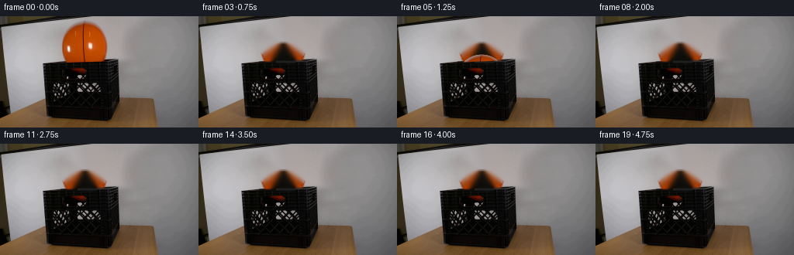
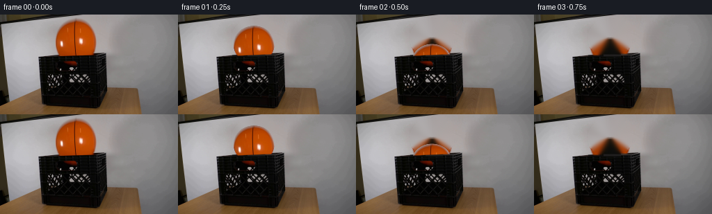
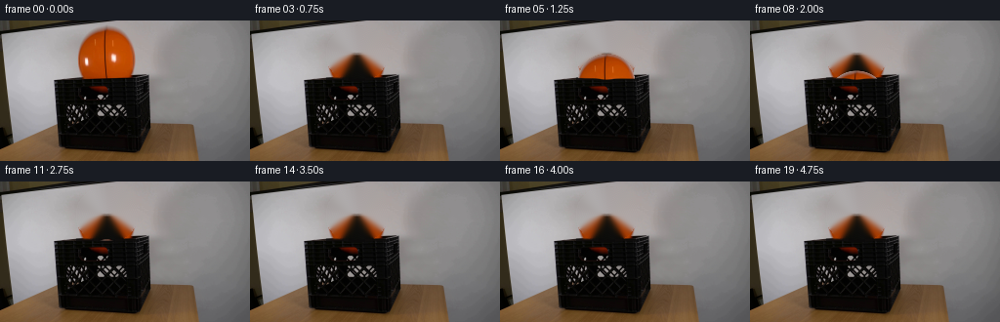
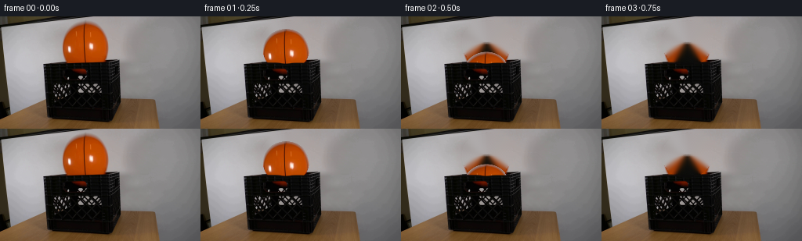
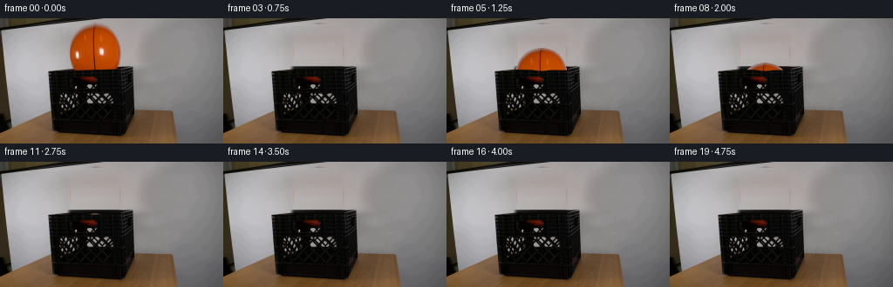
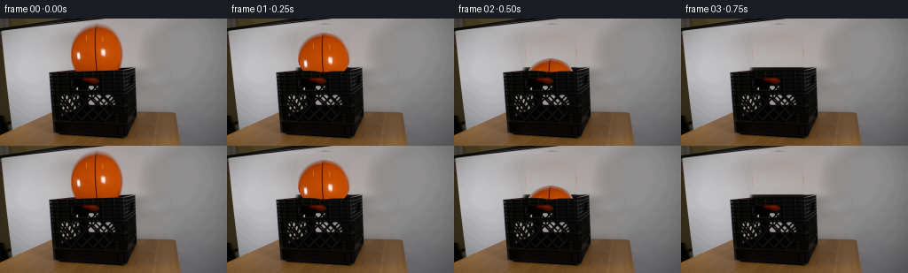

CODING AGENTS AS PIXEL WORLD MODELS
traex/DeepSeek-V4.1-Flash · 0015
点击播放 · 原生 RGB 像素
逐轮保存的候选
回放视频、检查图与代码变化。
每份候选均可单独播放。实际图片检查记录在下方工具轨迹中。
候选 01播放与检查图
点击播放 · 原生 RGB 像素


展开代码变化
--- 上一保存版本
+++ 本次保存版本
@@ -0,0 +1,163 @@
+from pathlib import Path
+
+import cv2
+import numpy as np
+from PIL import Image
+
+import artifact_io
+
+
+ROOT = Path(__file__).resolve().parent
+WIDTH = 256
+HEIGHT = 144
+FRAME_COUNT = 20
+FPS = 4
+
+BALL_CX = 108.7
+BALL_CY = 33.6
+BALL_RX = 29.4
+BALL_RY = 26.7
+
+GRAVITY = 280.0
+FLOOR_CENTER_Y = 102.0
+RESTITUTION = 0.64
+
+
+def smoothstep(edge0, edge1, values):
+ t = np.clip((values - edge0) / (edge1 - edge0), 0.0, 1.0)
+ return t * t * (3.0 - 2.0 * t)
+
+
+def make_clean_plate(image):
+ yy, xx = np.mgrid[:HEIGHT, :WIDTH]
+ q = ((xx - BALL_CX) / BALL_RX) ** 2 + ((yy - BALL_CY) / BALL_RY) ** 2
+ removal_mask = (q <= 1.08).astype(np.uint8) * 255
+ removal_mask = cv2.dilate(removal_mask, np.ones((3, 3), np.uint8), iterations=1)
+
+ plate = cv2.inpaint(image, removal_mask, 4, cv2.INPAINT_TELEA)
+
+ # The ball crosses the crate's thin front lip. Restore that dark edge
+ # across the inpainted center so it remains continuous when the ball is gone.
+ for x in range(78, 141):
+ rim_y = int(round(60.3 - 0.041 * (x - 56)))
+ left = image[max(0, rim_y - 1):min(HEIGHT, rim_y + 3), 70:78].reshape(-1, 3)
+ right = image[max(0, rim_y - 1):min(HEIGHT, rim_y + 3), 140:148].reshape(-1, 3)
+ edge_color = 0.55 * np.median(left, axis=0) + 0.45 * np.median(right, axis=0)
+ edge_color *= 0.46
+ blend = np.array([0.35, 0.8, 0.8, 0.35], dtype=np.float32)
+ for offset, weight in enumerate(blend):
+ y = rim_y - 1 + offset
+ if 0 <= y < HEIGHT:
+ plate[y, x] = (
+ (1.0 - weight) * plate[y, x].astype(np.float32)
+ + weight * edge_color
+ ).astype(np.uint8)
+
+ return plate
+
+
+def make_ball_sprite(image, plate):
+ x0 = int(np.floor(BALL_CX - BALL_RX - 3))
+ x1 = int(np.ceil(BALL_CX + BALL_RX + 4))
+ y0 = int(np.floor(BALL_CY - BALL_RY - 3))
+ y1 = int(np.ceil(BALL_CY + BALL_RY + 4))
+
+ yy, xx = np.mgrid[y0:y1, x0:x1]
+ q = ((xx - BALL_CX) / BALL_RX) ** 2 + ((yy - BALL_CY) / BALL_RY) ** 2
+ ellipse_alpha = 1.0 - smoothstep(0.965, 1.035, q)
+
+ observed = image[y0:y1, x0:x1].astype(np.float32)
+ background = plate[y0:y1, x0:x1].astype(np.float32)
+ difference = np.sqrt(np.sum((observed - background) ** 2, axis=2))
+ color_alpha = smoothstep(4.0, 25.0, difference)
+ alpha = ellipse_alpha * color_alpha
+
+ safe_alpha = np.maximum(alpha[..., None], 0.18)
+ foreground = (observed - (1.0 - alpha[..., None]) * background) / safe_alpha
+ foreground = np.clip(foreground, 0.0, 255.0)
+
+ return foreground, alpha, x0, y0
+
+
+def simulate_ball_centers():
+ centers = []
+ y = BALL_CY
+ velocity = 0.0
+ time = 0.0
+ frame_time = 0.0
+ dt = 1.0 / 2000.0
+
+ for frame in range(FRAME_COUNT):
+ target_time = frame / FPS
+ while time < target_time - 1e-12:
+ step = min(dt, target_time - time)
+ velocity += GRAVITY * step
+ y += velocity * step
+ time += step
+ if y >= FLOOR_CENTER_Y:
+ y = FLOOR_CENTER_Y
+ velocity = -RESTITUTION * abs(velocity)
+ centers.append(y)
+
+ return np.asarray(centers, dtype=np.float32)
+
+
+def composite_ball(frame, sprite, alpha, sprite_x, sprite_y, center_y):
+ shift_y = int(round(center_y - BALL_CY))
+ top = sprite_y + shift_y
+ bottom = top + sprite.shape[0]
+ left = sprite_x
+ right = sprite_x + sprite.shape[1]
+
+ dst_y0 = max(0, top)
+ dst_y1 = min(HEIGHT, bottom)
+ dst_x0 = max(0, left)
+ dst_x1 = min(WIDTH, right)
+ if dst_y0 >= dst_y1 or dst_x0 >= dst_x1:
+ return
+
+ src_y0 = dst_y0 - top
+ src_y1 = src_y0 + (dst_y1 - dst_y0)
+ src_x0 = dst_x0 - left
+ src_x1 = src_x0 + (dst_x1 - dst_x0)
+
+ yy, xx = np.mgrid[dst_y0:dst_y1, dst_x0:dst_x1]
+ rim_y = 60.3 - 0.041 * (xx - 56.0)
+ visible = np.clip((rim_y - yy + 0.4) / 1.3, 0.0, 1.0)
+ blend = alpha[src_y0:src_y1, src_x0:src_x1] * visible
+
+ source = sprite[src_y0:src_y1, src_x0:src_x1]
+ destination = frame[dst_y0:dst_y1, dst_x0:dst_x1].astype(np.float32)
+ mixed = blend[..., None] * source + (1.0 - blend[..., None]) * destination
+ frame[dst_y0:dst_y1, dst_x0:dst_x1] = np.clip(mixed + 0.5, 0, 255).astype(np.uint8)
+
+
+def main():
+ source = np.asarray(Image.open(ROOT / "first_frame.png").convert("RGB"))
+ plate = make_clean_plate(source)
+ sprite, alpha, sprite_x, sprite_y = make_ball_sprite(source, plate)
+ centers = simulate_ball_centers()
+
+ tmp = ROOT / ".tmp"
+ tmp.mkdir(exist_ok=True)
+ Image.fromarray(plate).save(tmp / "clean_plate.png")
+ sprite_alpha = np.dstack([sprite.astype(np.uint8), (alpha * 255).astype(np.uint8)])
+ Image.fromarray(sprite_alpha, mode="RGBA").save(tmp / "ball_sprite.png")
+
+ frames = []
+ for index, center_y in enumerate(centers):
+ if index == 0:
+ frames.append(source.copy())
+ continue
+ frame = plate.copy()
+ composite_ball(frame, sprite, alpha, sprite_x, sprite_y, float(center_y))
+ frames.append(frame)
+
+ frames = np.stack(frames).astype(np.uint8)
+ assert frames.shape == (FRAME_COUNT, HEIGHT, WIDTH, 3)
+ assert np.array_equal(frames[0], source)
+ artifact_io.save(frames, ROOT)
+
+
+if __name__ == "__main__":
+ main()
候选 02播放与检查图
点击播放 · 原生 RGB 像素


展开代码变化
--- 上一保存版本
+++ 本次保存版本
@@ -18,9 +18,9 @@
BALL_RX = 29.4
BALL_RY = 26.7
-GRAVITY = 280.0
-FLOOR_CENTER_Y = 102.0
-RESTITUTION = 0.64
+GRAVITY = 300.0
+FLOOR_CENTER_Y = 100.0
+RESTITUTION = 0.78
def smoothstep(edge0, edge1, values):
@@ -39,7 +39,7 @@
# The ball crosses the crate's thin front lip. Restore that dark edge
# across the inpainted center so it remains continuous when the ball is gone.
for x in range(78, 141):
- rim_y = int(round(60.3 - 0.041 * (x - 56)))
+ rim_y = int(round(rim_front_y(np.asarray([x], dtype=np.float32))[0]))
left = image[max(0, rim_y - 1):min(HEIGHT, rim_y + 3), 70:78].reshape(-1, 3)
right = image[max(0, rim_y - 1):min(HEIGHT, rim_y + 3), 140:148].reshape(-1, 3)
edge_color = 0.55 * np.median(left, axis=0) + 0.45 * np.median(right, axis=0)
@@ -84,7 +84,6 @@
y = BALL_CY
velocity = 0.0
time = 0.0
- frame_time = 0.0
dt = 1.0 / 2000.0
for frame in range(FRAME_COUNT):
@@ -122,14 +121,20 @@
src_x1 = src_x0 + (dst_x1 - dst_x0)
yy, xx = np.mgrid[dst_y0:dst_y1, dst_x0:dst_x1]
- rim_y = 60.3 - 0.041 * (xx - 56.0)
- visible = np.clip((rim_y - yy + 0.4) / 1.3, 0.0, 1.0)
+ rim_y = rim_front_y(xx)
+ visible = np.clip((rim_y - yy + 0.35) / 1.25, 0.0, 1.0)
blend = alpha[src_y0:src_y1, src_x0:src_x1] * visible
source = sprite[src_y0:src_y1, src_x0:src_x1]
destination = frame[dst_y0:dst_y1, dst_x0:dst_x1].astype(np.float32)
mixed = blend[..., None] * source + (1.0 - blend[..., None]) * destination
frame[dst_y0:dst_y1, dst_x0:dst_x1] = np.clip(mixed + 0.5, 0, 255).astype(np.uint8)
+
+
+def rim_front_y(x):
+ # Perspective trace of the crate's front lip. The center is just below
+ # the far rim so the ball first drops behind it, then rebounds into view.
+ return 59.1 + 0.013 * (x - 108.0) + 1.25 * np.exp(-((x - 108.0) / 8.0) ** 2)
def main():
候选 03播放与检查图
点击播放 · 原生 RGB 像素


展开代码变化
--- 上一保存版本
+++ 本次保存版本
@@ -1,6 +1,5 @@
from pathlib import Path
-import cv2
import numpy as np
from PIL import Image
@@ -29,31 +28,31 @@
def make_clean_plate(image):
- yy, xx = np.mgrid[:HEIGHT, :WIDTH]
- q = ((xx - BALL_CX) / BALL_RX) ** 2 + ((yy - BALL_CY) / BALL_RY) ** 2
- removal_mask = (q <= 1.08).astype(np.uint8) * 255
- removal_mask = cv2.dilate(removal_mask, np.ones((3, 3), np.uint8), iterations=1)
+ plate = image.astype(np.float32).copy()
+ safe_x = np.r_[60:78, 141:161]
+ fill_x = np.arange(76, 142)
+ rim_mix = np.array([0.45, 0.70, 0.82, 0.88, 0.92, 0.95], dtype=np.float32)
+ rim_black = np.array([9.0, 9.0, 7.0], dtype=np.float32)
- plate = cv2.inpaint(image, removal_mask, 4, cv2.INPAINT_TELEA)
+ for y in range(7, 61):
+ samples_x = np.r_[safe_x]
+ samples_y = image[y, samples_x].astype(np.float32)
+ coefficients = np.polyfit(samples_x, samples_y, 2)
+ background = np.column_stack(
+ [np.polyval(coefficients[:, channel], fill_x) for channel in range(3)]
+ )
+ background = np.clip(background, 0.0, 255.0)
- # The ball crosses the crate's thin front lip. Restore that dark edge
- # across the inpainted center so it remains continuous when the ball is gone.
- for x in range(78, 141):
- rim_y = int(round(rim_front_y(np.asarray([x], dtype=np.float32))[0]))
- left = image[max(0, rim_y - 1):min(HEIGHT, rim_y + 3), 70:78].reshape(-1, 3)
- right = image[max(0, rim_y - 1):min(HEIGHT, rim_y + 3), 140:148].reshape(-1, 3)
- edge_color = 0.55 * np.median(left, axis=0) + 0.45 * np.median(right, axis=0)
- edge_color *= 0.46
- blend = np.array([0.35, 0.8, 0.8, 0.35], dtype=np.float32)
- for offset, weight in enumerate(blend):
- y = rim_y - 1 + offset
- if 0 <= y < HEIGHT:
- plate[y, x] = (
- (1.0 - weight) * plate[y, x].astype(np.float32)
- + weight * edge_color
- ).astype(np.uint8)
+ if y >= 55:
+ mix = rim_mix[y - 55]
+ background = (1.0 - mix) * background + mix * rim_black
- return plate
+ # Feather the repaired strip into the untouched image at both sides.
+ edge = np.minimum(fill_x - 76, 141 - fill_x).astype(np.float32)
+ feather = np.clip(edge / 5.0, 0.0, 1.0)[:, None]
+ plate[y, fill_x] = feather * background + (1.0 - feather) * plate[y, fill_x]
+
+ return np.clip(plate + 0.5, 0.0, 255.0).astype(np.uint8)
def make_ball_sprite(image, plate):
@@ -147,7 +146,7 @@
tmp.mkdir(exist_ok=True)
Image.fromarray(plate).save(tmp / "clean_plate.png")
sprite_alpha = np.dstack([sprite.astype(np.uint8), (alpha * 255).astype(np.uint8)])
- Image.fromarray(sprite_alpha, mode="RGBA").save(tmp / "ball_sprite.png")
+ Image.fromarray(sprite_alpha).save(tmp / "ball_sprite.png")
frames = []
for index, center_y in enumerate(centers):
可观测工具轨迹
实际执行的命令与返回图片。
命令 1exit 0
/bin/bash -c "pwd && rg --files -g '"'!*__pycache__*'"' | sort"
命令 2exit 0
/bin/bash -c 'cat prompt.txt'
命令 3exit 0
/bin/bash -c 'cat GENERATION_RULES.md'
命令 4exit 0
/bin/bash -c 'file first_frame.png && identify first_frame.png 2>/dev/null || true && git status --short'
命令 5exit 0
/bin/bash -c "sed -n '1,240p' artifact_io.py"
命令 6exit 0
/bin/bash -c "sed -n '1,240p' player_template.html"
命令 7exit 0
/bin/bash -c "python3 - <<'PY'
from PIL import Image
import numpy as np
im=Image.open('first_frame.png').convert('RGB')
a=np.asarray(im)
print(im.size, im.mode, a.shape, a.dtype)
print('min', a.reshape(-1,3).min(0), 'max', a.reshape(-1,3).max(0), 'mean', a.reshape(-1,3).mean(0))
print('corner/table samples')
for y,x in [(0,0),(72,128),(143,255),(20,20),(120,128),(70,70),(30,200)]:
print((x,y), a[y,x])
# dominant colors quantized
q=(a//16)*16
u,c=np.unique(q.reshape(-1,3),axis=0,return_counts=True)
for i in np.argsort(c)[-20:][::-1]: print(tuple(u[i]), int(c[i]))
PY"命令 8exit 0
/bin/bash -c "python3 - <<'PY'
from PIL import Image
import numpy as np
from collections import deque
im=np.asarray(Image.open('first_frame.png').convert('RGB')).astype(np.int16)
R,G,B=im.transpose(2,0,1)
# broad orange mask
m=(R>120)&(R>G*1.35)&(G>20)&(G<170)&(B<110)
ys,xs=np.where(m)
print('orange count',len(xs),'bbox',xs.min(),ys.min(),xs.max(),ys.max(),'centroid',xs.mean(),ys.mean())
# components via simple BFS over mask
seen=np.zeros_like(m,bool)
comps=[]
for y,x in zip(ys,xs):
if seen[y,x]: continue
stack=[(y,x)]; seen[y,x]=1; pts=[]
while stack:
yy,xx=stack.pop(); pts.append((yy,xx))
for dy,dx in ((1,0),(-1,0),(0,1),(0,-1)):
ny,nx=yy+dy,xx+dx
if 0<=ny<144 and 0<=nx<256 and m[ny,nx] and not seen[ny,nx]: seen[ny,nx]=1; stack.append((ny,nx))
comps.append(pts)
for pts in sorted(comps,key=len,reverse=True)[:10]:
yy=np.array([p[0] for p in pts]); xx=np.array([p[1] for p in pts])
print('comp',len(pts),'bbox',xx.min(),yy.min(),xx.max(),yy.max(),'cent',xx.mean(),yy.mean())
# samples grid avg every 16x16 as gray/color classification
print('mean RGB blocks 8x8 (16x9 blocks)')
for by in range(0,144,16):
row=[]
for bx in range(0,256,32):
c=im[by:by+16,bx:bx+32].reshape(-1,3).mean(0)
row.append('%3d,%3d,%3d'%tuple(c.astype(int)))
print(f'{by:3}', ' | '.join(row))
PY"命令 9exit 0
/bin/bash -c "python3 - <<'PY'
from PIL import Image
import numpy as np
im=np.asarray(Image.open('first_frame.png').convert('RGB')).astype(np.int16)
R,G,B=im.transpose(2,0,1)
# masks
black=(R<55)&(G<55)&(B<55)
orange=(R>90)&(R>G*1.25)&(G>15)&(B<100)&((R-B)>45)
# print spans each row (runs >=2) of black and orange
def runs(mask, minlen=2):
p=np.flatnonzero(mask)
if len(p)==0:return []
cuts=np.r_[0,np.flatnonzero(np.diff(p)>1)+1,len(p)]
return [(int(p[a]),int(p[b-1])) for a,b in zip(cuts[:-1],cuts[1:]) if p[b-1]-p[a]+1>=minlen]
print('ROW black spans | orange spans')
for y in range(0,144,2):
br=runs(black[y],3); orr=runs(orange[y],2)
if br or orr:
print(f'{y:3d} B{br[:6]} O{orr[:4]}')
PY"命令 10exit 0
/bin/bash -c "ls -la && python3 - <<'PY' mods=['cv2','scipy','skimage','numpy','PIL'] for m in mods: try: x=__import__(m); print(m,getattr(x,'__version__','ok')) except Exception as e: print(m,'MISSING',e) PY"
命令 11exit 0
/bin/bash -c "python3 - <<'PY'
from PIL import Image
import numpy as np
a=np.asarray(Image.open('first_frame.png').convert('RGB'))
# RGB samples around ball by row, x positions at 2px interval for y 4..64
for y in range(4,65,4):
vals=[]
for x in [40,56,64,72,76,80,84,88,96,104,112,120,128,136,140,144,152,160,168,176]:
c=a[y,x]; vals.append(f'{x}:{c[0]:02x}{c[1]:02x}{c[2]:02x}')
print(f'y={y:2}', ' '.join(vals))
PY"命令 12exit 0
/bin/bash -c "python3 - <<'PY'
from PIL import Image
import numpy as np
a=np.asarray(Image.open('first_frame.png').convert('RGB')).astype(int)
# Gradient magnitudes, summarize median by row / selected regions
for y in [0,4,8,12,16,20,24,28,32,36,40,44,48,52,56,60,64,70,80,100,120,140]:
gx=np.abs(np.diff(a[y],axis=0)).mean(); gy=np.abs(a[min(y+1,143)]-a[y]).mean()
print(y, round(gx,1), round(gy,1))
PY"命令 13exit 0
/bin/bash -c "python3 - <<'PY'
from PIL import Image
import numpy as np, cv2
a=np.asarray(Image.open('first_frame.png').convert('RGB'))
R,G,B=a.astype(float).transpose(2,0,1)
m=((R>90)&(R>G*1.25)&(G>15)&(B<110)&((R-B)>40)).astype(np.uint8)
m[:4]=0;m[62:]=0;m[:,:65]=0;m[:,145:]=0
n,lab,stats,cents=cv2.connectedComponentsWithStats(m,8)
i=1+np.argmax(stats[1:,cv2.CC_STAT_AREA])
mm=(lab==i).astype(np.uint8)
pts=np.column_stack(np.where(mm>0))
ell=cv2.fitEllipse(pts[:,::-1].astype(np.float32))
print('ellipse',ell,'stats',stats[i])
# edge mask is binary. fit circle least squares to points that are orange on expected outer boundary
ys,xs=np.where(mm)
cx=xs.mean();cy=ys.mean();r=np.sqrt(len(xs)/np.pi)
print('circle initial',cx,cy,r)
# radial percentiles for orange points angles
for ang in range(0,360,15):
t=np.deg2rad(ang); proj=(xs-cx)*np.cos(t)+(ys-cy)*np.sin(t)
q=np.quantile(proj,.95)
print(ang,round(q,2),end='; ')
print()
PY"命令 14exit 0
/bin/bash -c "python3 - <<'PY'
from PIL import Image
import numpy as np
a=np.asarray(Image.open('first_frame.png').convert('RGB')).astype(float)
# 2x2 average blocks, ASCII classify
for y in range(0,144,2):
s=''
for x in range(0,256,2):
c=a[y:y+2,x:x+2].mean((0,1)); r,g,b=c
v=c.mean()
if r>120 and r>g*1.25 and g>15 and b<110 and r-b>40: ch='O'
elif r>180 and g>170 and b>165 and v>170: ch='@'
elif v>175: ch='#'
elif v>145: ch='8'
elif v>115: ch='o'
elif v>85: ch='+'
elif v>55: ch=':'
elif v>30: ch='.'
else: ch=' '
s+=ch
print(s)
PY"命令 15exit 0
/bin/bash -c "python3 - <<'PY'
from PIL import Image
import numpy as np
a=np.asarray(Image.open('first_frame.png').convert('RGB')).astype(float)
# brightest object region left
for y in range(0,70,4):
s=''
for x in range(0,64,2):
c=a[y:y+4,x:x+2].mean((0,1));v=c.mean()
s += ' ' if v<30 else '.' if v<60 else ':' if v<90 else '+' if v<120 else 'o' if v<145 else '8' if v<170 else '#' if v<195 else '@'
print(f'{y:02d}',s)
PY"命令 16exit 0
/bin/bash -c "python3 - <<'PY'
from PIL import Image
import numpy as np
a=np.asarray(Image.open('first_frame.png').convert('RGB')).astype(float)
for y in range(0,64,4):
vals=[]
for lo,hi in [(65,79),(79,90),(139,155),(155,180)]:
c=np.median(a[max(0,y-1):min(144,y+2),lo:hi],axis=(0,1)); vals.append('%.0f,%.0f,%.0f'%tuple(c))
print(y,' | '.join(vals))
PY"命令 17exit 0
/bin/bash -c "python3 - <<'PY'
from PIL import Image
import numpy as np
a=np.asarray(Image.open('first_frame.png').convert('RGB')).astype(float)
# assess local texture std in patches and line gradients
for y,x in [(20,20),(30,50),(40,170),(70,170),(90,170),(120,170),(20,240),(100,20),(135,100),(130,220)]:
p=a[max(0,y-5):y+6,max(0,x-5):x+6]
print((x,y),'mean',p.mean((0,1)).round(1),'std',p.std((0,1)).round(1))
PY"命令 18exit 0
/bin/bash -c "python3 - <<'PY'
from PIL import Image
import numpy as np, cv2
a=np.asarray(Image.open('first_frame.png').convert('RGB')).astype(np.float32)
g=cv2.cvtColor(a.astype(np.uint8),cv2.COLOR_RGB2GRAY)
# test segments by threshold high brightness
for th in [110,130,150,170,190]:
m=(g>th).astype(np.uint8)
n,l,st,c=cv2.connectedComponentsWithStats(m,8)
print('\\nth',th)
for j in np.argsort(st[1:,4])[-8:][::-1]+1:
print(j,st[j].tolist())
PY"命令 19exit 0
/bin/bash -c "python3 - <<'PY'
import math
for e in [.8,.84,.87,.9]:
g=230; y0=35.3; floor=90; t=0; y=y0; v=0; impacts=[]
print('\\ne',e)
for f in range(20):
tt=f/4
# simulate by finding impacts and position
yy=y0; vv=0; now=0
while True:
# root to floor
disc=vv*vv+2*g*(floor-yy)
dt=(-vv+math.sqrt(disc))/g
if now+dt>=tt:
yt=yy+vv*(tt-now)+.5*g*(tt-now)**2; break
now+=dt; yy=floor; vv=-e*abs(vv+g*dt)
print(f'{yt:5.1f}',end=' ')
print()
PY"命令 20exit 0
/bin/bash -c "python3 - <<'PY'
from PIL import Image
import numpy as np
a=np.asarray(Image.open('first_frame.png').convert('RGB')).astype(float)
for y in range(56,130,2):
s=''
for x in range(50,160,2):
c=a[y:y+2,x:x+2].mean((0,1));v=c.mean()
s += ' ' if v<8 else '.' if v<16 else ':' if v<28 else '+' if v<45 else 'o' if v<65 else '8' if v<90 else '#' if v<120 else '@'
print(f'{y:3d}',s)
PY"命令 21exit 0
/bin/bash -c "python3 - <<'PY'
from PIL import Image
import numpy as np
a=np.asarray(Image.open('first_frame.png').convert('RGB')).astype(float)
# horizontal profiles at selected rows values as x runs compact by 8 bins
for y in [56,58,60,62,64,70,80,90,100,110,120,126,130,132,134,136]:
vals=[]
for x in range(52,158,6):
c=np.mean(a[max(0,y-1):y+2,x:x+6],axis=(0,1)).mean(); vals.append(f'{c:4.0f}')
print(y,' '.join(vals))
PY"命令 22exit 0
/bin/bash -c "python3 - <<'PY'
from PIL import Image
import numpy as np
a=np.asarray(Image.open('first_frame.png').convert('RGB')).astype(float)
# print vertical edge profiles around likely rim: mean grayscale per row for x 60:152
for y in range(50,140):
v=a[y,60:152].mean(); v2=a[y,60:152].std(); print(f'{y:3} {v:6.1f} {v2:5.1f}')
PY"命令 23exit 0
/bin/bash -c "python3 - <<'PY'
from PIL import Image
import numpy as np
a=np.asarray(Image.open('first_frame.png').convert('RGB')).astype(float)
for y in range(38,61):
def med(x0,x1): return np.median(a[y,x0:x1],axis=0).round().astype(int)
print(y,'L',med(66,76),'R',med(140,150),'RR',med(152,162),'L2',med(56,66))
PY"命令 24exit 0
/bin/bash -c "python3 - <<'PY'
from PIL import Image
import numpy as np
a=np.asarray(Image.open('first_frame.png').convert('RGB')).astype(float)
# rim boundaries at left and right: find sharpest transition in 48..75 and 125..160 per y, and brightness around them
for y in range(54,68):
row=a[y].mean(1)
gl=np.abs(np.diff(row))
print(y, 'left',48+np.argmax(gl[48:75]),gl[48:75].max(),'right',125+np.argmax(gl[125:165]),gl[125:165].max())
PY"命令 25exit 0
/bin/bash -c "python3 - <<'PY'
from PIL import Image
import numpy as np
a=np.asarray(Image.open('first_frame.png').convert('RGB')).astype(float)
for y in [0,1,2,3,4,5,8,10,12,16,20,30,40,50,55,56,57,58,59,60,61,62,63,64,65,66,70,80,100,120,140]:
print(y, np.median(a[y,0:12],axis=0).round().astype(int), np.median(a[y,12:28],axis=0).round().astype(int), np.median(a[y,28:44],axis=0).round().astype(int))
PY"命令 26exit 0
/bin/bash -c "python3 - <<'PY'
from PIL import Image
import numpy as np
a=np.asarray(Image.open('first_frame.png').convert('RGB')).astype(float)
for y in range(50,76):
print(y, np.median(a[y,60:67],axis=0).round().astype(int), np.median(a[y,68:74],axis=0).round().astype(int), np.median(a[y,138:145],axis=0).round().astype(int), np.median(a[y,146:152],axis=0).round().astype(int))
PY"命令 27exit 0
/bin/bash -c "python3 - <<'PY'
from PIL import Image
import numpy as np
a=np.asarray(Image.open('first_frame.png').convert('RGB')).astype(int)
for y,xs in [(6,range(96,122,2)),(8,range(92,126,2)),(10,range(90,128,2)),(30,range(76,142,2)),(34,range(76,142,2)),(54,range(76,142,2)),(56,range(76,142,2)),(58,range(76,142,2)),(60,range(76,142,2))]:
print('\\ny',y)
for x in xs:
c=a[y,x]; print(f'{x}:{c[0]:3},{c[1]:3},{c[2]:3}',end=' ')
print()
PY"命令 28exit 0
/bin/bash -c "python3 - <<'PY'
import math
for g,e,floor in [(330,.86,104),(300,.88,104),(280,.9,102),(360,.84,104),(250,.9,104)]:
print('\\n',g,e,floor)
y=35;v=0;t=0;dt=1/240;out=[]
for f in range(20):
target=f*.25
while t<target-1e-9:
step=min(dt,target-t)
v+=g*step;y+=v*step;t+=step
if y>=floor:
y=floor;v=-e*v
out.append((y,v))
print('y ',' '.join(f'{y:5.1f}' for y,v in out))
print('v ',' '.join(f'{v:5.0f}' for y,v in out))
PY"命令 29exit 0
/bin/bash -c "python3 - <<'PY'
from PIL import Image
import numpy as np
a=np.asarray(Image.open('first_frame.png').convert('RGB')).astype(float)
for y in range(52,64):
vals=[]
for x in range(44,164,4):
c=a[y:y+1,x:x+4].mean((0,1)); vals.append(f'{c.mean():3.0f}')
print(y,' '.join(vals))
print('x header', ' '.join(f'{x:3}' for x in range(44,164,4)))
PY"命令 30exit 0
/bin/bash -c "python3 - <<'PY'
from PIL import Image
import numpy as np
a=np.asarray(Image.open('first_frame.png').convert('RGB')).astype(float)
cx,cy,rx,ry=108.7,35.2,29.5,27.0
for y in range(7,64):
s=''
for x in range(78,141):
q=((x-cx)/rx)**2+((y-cy)/ry)**2
c=a[y,x]
if q>1.0: ch=' '
elif c.mean()>120 and c[0]>c[1]*1.5: ch='@' # highlight
elif c.mean()<35: ch='#' # dark seam
elif c.mean()<65: ch='+'
elif c.mean()<110: ch='o'
elif c.mean()<150: ch='8'
elif c.mean()<180: ch='O'
else: ch='@'
s+=ch
print(f'{y:2}',s)
PY"命令 31exit 0
/bin/bash -c "python3 - <<'PY'
import math
# exact segment simulation samples
y=35.0; v=0.0; t=0.0; dt=1/2000
ys=[]; hits=[]
for f in range(20):
target=f*.25
while t<target-1e-12:
st=min(dt,target-t)
v+=400*st; y+=v*st; t+=st
if y>=107:
y=107; v=-.8*v; hits.append(t)
ys.append((y,v))
print('hits', ['%.3f'%x for x in hits])
for i,(y,v) in enumerate(ys): print(i, f'{y:.2f}', f'{v:.0f}')
PY"命令 32exit 0
/bin/bash -c "python3 - <<'PY'
import math
for g,e,floor in [(400,.8,107),(350,.78,107),(300,.8,107),(250,.82,107),(220,.85,107),(180,.85,107)]:
y=35.;v=0;t=0;dt=1/1000; ys=[]
for f in range(20):
target=f*.25
while t<target-1e-12:
st=min(dt,target-t);v+=g*st;y+=v*st;t+=st
if y>=floor:y=floor;v=-e*v
ys.append(y)
print(g,e,' '.join(f'{x:5.1f}' for x in ys))
PY"命令 33exit 0
/bin/bash -c "python3 - <<'PY'
import math
for g,e,floor in [(300,.75,103),(320,.75,103),(280,.75,103),(300,.7,103),(300,.72,103)]:
y=35.;v=0;t=0;dt=1/1000; ys=[]
for f in range(20):
target=f*.25
while t<target-1e-12:
st=min(dt,target-t);v+=g*st;y+=v*st;t+=st
if y>=floor:y=floor;v=-e*v
ys.append(y)
print(g,e,' '.join(f'{x:5.1f}' for x in ys))
PY"命令 34exit 0
/bin/bash -c "python3 - <<'PY'
from PIL import Image
import numpy as np
a=np.asarray(Image.open('first_frame.png').convert('RGB')).astype(float)
# for each x, find top dark crate edge (mean<60) after y40
for x in range(40,180,4):
col=a[:,x].mean(1)
ys=np.where(col<60)[0]; ys=ys[ys>=45]
print(x, ys.min() if len(ys) else None, end='; ')
print()
PY"命令 35exit 0
/bin/bash -c "python3 - <<'PY'
from PIL import Image
import numpy as np
a=np.asarray(Image.open('first_frame.png').convert('RGB')).astype(float)
# Sample crate front face texture; determine median and std in zones
for y0,y1,x0,x1 in [(70,90,65,145),(95,115,65,145),(110,130,65,145),(100,130,155,190),(70,100,155,190)]:
p=a[y0:y1,x0:x1]; print((x0,y0,x1,y1),'mean',p.mean((0,1)).round(1),'median',np.median(p.reshape(-1,3),0),'std',p.std((0,1)).round(1))
# bottom line location by x interior mean gradients
for x in [70,80,100,120,140]:
g=np.abs(np.diff(a[:,x].mean(1)))
print(x, np.argsort(g[110:143])[-5:]+110, g[110:143].max())
PY"命令 36exit 0
/bin/bash -c "python3 - <<'PY'
from PIL import Image
import numpy as np
a=np.asarray(Image.open('first_frame.png').convert('RGB')).astype(float)
for x in range(56,154,6):
s=''
for y in range(54,142,2):
v=a[y:y+2,x:x+6].mean(); s += ' ' if v<5 else '.' if v<10 else ':' if v<20 else '+' if v<40 else 'o' if v<70 else '8' if v<100 else '#' if v<130 else '@'
print(f'{x:3}',s)
PY"命令 37exit 0
/bin/bash -c "python3 - <<'PY'
from PIL import Image
import numpy as np
a=np.asarray(Image.open('first_frame.png').convert('RGB')).astype(float)
for y in range(92,104):
print(y, [tuple(np.mean(a[y:y+1,x:x+4],axis=(0,1)).astype(int)) for x in [82,86,90,94,98,102,106,110,114,118,122,126]])
PY"命令 38exit 0
/bin/bash -c 'python3 generate.py'
命令 39exit 0
/bin/bash -c "python3 - <<'PY'
import importlib.util, numpy as np
from PIL import Image
spec=importlib.util.spec_from_file_location('g','generate.py'); g=importlib.util.module_from_spec(spec); spec.loader.exec_module(g)
print('centers', np.round(g.simulate_ball_centers(),2).tolist())
print('top/bottom', [(round(c-g.BALL_RY,1),round(c+g.BALL_RY,1)) for c in g.simulate_ball_centers()])
a=np.asarray(Image.open('first_frame.png').convert('RGB'))
p=np.asarray(Image.open('.tmp/clean_plate.png').convert('RGB'))
d=np.abs(a.astype(int)-p.astype(int)).mean(2)
print('plate diff regions max/mean',d.max(),d.mean(),'ball diff count>10',int((d>10).sum()))
sp=np.asarray(Image.open('.tmp/ball_sprite.png'))
alpha=sp[...,3]
print('sprite',sp.shape,'alpha > 0/128/240',int((alpha>0).sum()),int((alpha>128).sum()),int((alpha>240).sum()),'bbox',np.where(alpha>8)[1].min(),np.where(alpha>8)[0].min(),np.where(alpha>8)[1].max(),np.where(alpha>8)[0].max())
PY"命令 40exit 0
/bin/bash -c "find . -maxdepth 2 -type f -printf '%p %s bytes\\n' | sort && python3 - <<'PY'
import numpy as np
from PIL import Image
p=np.load('pixels.npz')['pixels']; print('pixels',p.shape,p.dtype)
f=np.stack([np.asarray(Image.open(f'frames/{i:02d}.png').convert('RGB')) for i in range(20)])
print('frames',f.shape,'first exact',np.array_equal(f[0],np.asarray(Image.open('first_frame.png').convert('RGB'))))
print('changed pixels per frame',[int(np.any(f[i]"'!=f[i-1],axis=2).sum()) for i in range(1,20)])
print('"'non-first bbox')
for i in range(1,20):
m=np.any(f[i]"'!=f[0],axis=2); ys,xs=np.where(m)
print(i,(xs.min(),ys.min(),xs.max(),ys.max()),len(xs))
PY'命令 41exit 0
/bin/bash -c "python3 - <<'PY'
from PIL import Image
import numpy as np
p=np.asarray(Image.open('.tmp/clean_plate.png').convert('RGB')).astype(float)
a=np.asarray(Image.open('first_frame.png').convert('RGB')).astype(float)
# Print clean plate ball area ascii and save zoom sheet crop
for y in range(4,65,2):
s=''
for x in range(74,145,2):
c=p[y:y+2,x:x+2].mean((0,1));v=c.mean()
s += ' ' if v<30 else '.' if v<60 else ':' if v<90 else '+' if v<120 else 'o' if v<145 else '8' if v<170 else '#' if v<195 else '@'
print(f'{y:02d}',s)
Image.fromarray(p.astype(np.uint8)).resize((1024,576),Image.Resampling.NEAREST).save('.tmp/plate_zoom.png')
PY"命令 42exit 0
/bin/bash -c "python3 - <<'PY'
from PIL import Image
import numpy as np
f=np.stack([np.asarray(Image.open(f'frames/{i:02d}.png').convert('RGB')) for i in range(20)])
# generate zoomed crop contact sheet for quick local numeric review
from PIL import ImageDraw
crop=[]
for i in range(20):
im=Image.fromarray(f[i]).crop((48,0,176,140)).resize((256,280),Image.Resampling.NEAREST)
crop.append(im)
out=Image.new('RGB',(256*4,301*5),(20,20,20)); d=ImageDraw.Draw(out)
for i,im in enumerate(crop):
x=(i%4)*256;y=(i//4)*301;d.text((x+4,y+4),f'frame {i}',fill='white');out.paste(im,(x,y+21))
out.save('.tmp/frames_zoom.png')
PY"命令 43exit 0
/bin/bash -c "python3 - <<'PY'
import numpy as np
from PIL import Image
f=np.stack([np.asarray(Image.open(f'frames/{i:02d}.png').convert('RGB')) for i in range(20)])
a=np.asarray(Image.open('first_frame.png').convert('RGB'))
# Ball visibility estimate: changed orange pixels in moving region and row spans
for i in range(20):
p=f[i].astype(int); R,G,B=p.transpose(2,0,1)
m=(R>80)&(R>G*1.22)&(G>12)&(B<105)&((R-B)>38)
m[:,:70]=0;m[:,148:]=0
ys,xs=np.where(m)
print(i,'orange',len(xs),'bbox', (int(xs.min()),int(ys.min()),int(xs.max()),int(ys.max())) if len(xs) else None,'mean',np.round(p.reshape(-1,3).mean(0),2))
PY"命令 44exit 0
/bin/bash -c "python3 - <<'PY'
import numpy as np
from PIL import Image
s=np.asarray(Image.open('.tmp/ball_sprite.png'))
alpha=s[...,3]
# locate sprite origin from generate constants
cx=108.7;cy=33.6;rx=29.4;ry=26.7
x0=int(np.floor(cx-rx-3));y0=int(np.floor(cy-ry-3))
print('origin',x0,y0)
for j in range(alpha.shape[0]):
nz=np.where(alpha[j]>0)[0]
if len(nz): print(f'{y0+j:2}', int(nz.min()),int(nz.max()),int(alpha[j].max()),int((alpha[j]>200).sum()))
PY"命令 45exit 0
/bin/bash -c "python3 - <<'PY'
from PIL import Image
import numpy as np
f=np.stack([np.asarray(Image.open(f'frames/{i:02d}.png').convert('RGB')) for i in range(20)])
for i in range(1,7):
print('\\nFRAME',i)
for y in range(0,144,2):
s=''
for x in range(72,148,2):
c=f[i,y:y+2,x:x+2].mean((0,1)); v=c.mean(); r,g,b=c
if r>85 and r>g*1.25 and b<100 and r-b>40: ch='O'
elif v<15:ch=' '
elif v<35:ch='.'
elif v<65:ch=':'
elif v<100:ch='+'
elif v<140:ch='o'
elif v<170:ch='8'
elif v<195:ch='#'
else:ch='@'
s+=ch
print(s)
PY"命令 46exit 0
/bin/bash -c "python3 - <<'PY'
import math
for g,e,floor in [(400,.8,107),(420,.8,107),(380,.82,107),(450,.8,107),(400,.85,107),(500,.8,107)]:
y=35.;v=0;t=0;dt=1/2000; ys=[]
for f in range(20):
target=f*.25
while t<target-1e-12:
st=min(dt,target-t);v+=g*st;y+=v*st;t+=st
if y>=floor:y=floor;v=-e*v
ys.append(y)
print(g,e,' '.join(f'{x:5.1f}' for x in ys))
PY"命令 47exit 0
/bin/bash -c "python3 - <<'PY'
import math
# candidate positions for smooth descending shot
for g,e,floor in [(320,.9,96),(300,.92,96),(300,.95,96),(340,.9,96),(300,.9,98)]:
y=35.;v=0;t=0;dt=1/2000; ys=[]
for f in range(20):
target=f*.25
while t<target-1e-12:
st=min(dt,target-t);v+=g*st;y+=v*st;t+=st
if y>=floor:y=floor;v=-e*v
ys.append(y)
print(g,e,floor,' '.join(f'{x:5.1f}' for x in ys))
PY"命令 48exit 0
/bin/bash -c "python3 - <<'PY'
from PIL import Image
import numpy as np
p=np.asarray(Image.open('.tmp/clean_plate.png').convert('RGB')).astype(float)
# show the plate's recovered region values by row at x=108
for y in range(0,66):
print(y, p[y,108].round().astype(int), p[y,80].round().astype(int),p[y,136].round().astype(int))
PY"命令 49exit 0
/bin/bash -c "python3 - <<'PY'
from PIL import Image
import numpy as np
for fn in ['.tmp/clean_plate.png','frames/02.png','frames/03.png','frames/04.png']:
a=np.asarray(Image.open(fn).convert('RGB'))
print('\\n',fn)
for y in range(50,68):
print(y, tuple(np.median(a[y,90:130],axis=0).astype(int)))
PY"命令 50exit 0
/bin/bash -c "python3 - <<'PY'
from PIL import Image
import numpy as np
a=np.asarray(Image.open('first_frame.png').convert('RGB')).astype(int)
for y in range(0,16):
print(y, np.median(a[y,55:165],axis=0).astype(int))
PY"命令 51exit 0
/bin/bash -c "python3 - <<'PY'
from PIL import Image
import numpy as np
a=np.asarray(Image.open('first_frame.png').convert('RGB')).astype(int)
# find per-row location of largest horizontal gradient near central crate; top edge gradient
for y in range(52,66):
g=np.abs(np.diff(a[y].mean(1)))
xs=np.argsort(g[55:155])[-8:]+55
print(y,sorted((int(x),round(float(g[x]),1)) for x in xs))
PY"命令 52exit 0
/bin/bash -c "python3 generate.py && python3 - <<'PY'
from PIL import Image
import numpy as np
f=np.stack([np.asarray(Image.open(f'frames/{i:02d}.png').convert('RGB')) for i in range(20)])
p=np.asarray(Image.open('.tmp/clean_plate.png').convert('RGB'))
print('changed from plate',[int(np.any(f[i]"'!=p,axis=2).sum()) for i in range(20)])
print('"'changed frame-to-frame',[int(np.any(f[i]"'!=f[i-1],axis=2).sum()) for i in range(1,20)])
print('"'frame0 exact',np.array_equal(f[0],np.asarray(Image.open('first_frame.png').convert('RGB'))))
PY"命令 53exit 0
/bin/bash -c "python3 - <<'PY'
import importlib.util,numpy as np
spec=importlib.util.spec_from_file_location('g','generate.py');g=importlib.util.module_from_spec(spec);spec.loader.exec_module(g)
c=g.simulate_ball_centers();print(np.round(c,2).tolist());print('tops',np.round(c-g.BALL_RY,1).tolist());print('rim at cx',float(g.rim_front_y(np.array([g.BALL_CX]))[0]))
PY"命令 54exit 0
/bin/bash -c "python3 - <<'PY'
from PIL import Image
import numpy as np
f=np.stack([np.asarray(Image.open(f'frames/{i:02d}.png').convert('RGB')) for i in range(20)])
p=np.asarray(Image.open('.tmp/clean_plate.png').convert('RGB'))
for i in range(1,20):
d=np.max(np.abs(f[i].astype(int)-p.astype(int)),axis=2)
ys,xs=np.where(d>2)
print(i,len(xs), (int(xs.min()),int(ys.min()),int(xs.max()),int(ys.max())) if len(xs) else None)
PY"命令 55exit 0
/bin/bash -c "python3 - <<'PY'
from PIL import Image
import numpy as np
a=np.asarray(Image.open('first_frame.png').convert('RGB')).astype(float)
for y in [0,1,2,3,4,5,6,7,8,9,10,11,12,13,14,15,16,20,24,28,32,36,40,44,48,52,54,56,58]:
print(y, np.median(a[y,60:75],axis=0).astype(int), np.median(a[y,75:90],axis=0).astype(int), np.median(a[y,90:108],axis=0).astype(int),np.median(a[y,110:135],axis=0).astype(int),np.median(a[y,135:150],axis=0).astype(int))
PY"命令 56exit 0
/bin/bash -c "python3 - <<'PY'
from PIL import Image
import numpy as np
a=np.asarray(Image.open('first_frame.png').convert('RGB')).astype(float)
for y in range(0,12):
print(y, np.median(a[y,20:60],axis=0).astype(int), np.median(a[y,55:80],axis=0).astype(int),np.median(a[y,150:190],axis=0).astype(int),np.median(a[y,190:250],axis=0).astype(int))
PY"命令 57exit 0
/bin/bash -c "python3 - <<'PY'
from PIL import Image
import numpy as np
a=np.asarray(Image.open('first_frame.png').convert('RGB')).astype(float)
# flat background estimate by y using x=150:250, robust median
for y in range(0,70):
m=np.median(a[y,150:250],axis=0)
print(y, tuple(m.astype(int)))
PY"命令 58exit 0
/bin/bash -c "python3 - <<'PY'
from PIL import Image
import numpy as np
a=np.asarray(Image.open('first_frame.png').convert('RGB')).astype(float)
for x in range(40,181,4):
col=a[:,x].mean(1)
# strongest upward/downward edge around 54..62
g=np.abs(np.diff(col)); inds=np.argsort(g[52:63])[-3:]+52
print(x, [(int(i),round(float(g[i]),1)) for i in inds])
PY"命令 59exit 0
/bin/bash -c "python3 - <<'PY'
from PIL import Image
import numpy as np
a=np.asarray(Image.open('first_frame.png').convert('RGB')).astype(float)
for x in range(60,152,4):
print(x, tuple(np.median(a[65:90,x:x+4],axis=(0,1)).astype(int)))
PY"命令 60exit 0
/bin/bash -c "python3 generate.py && python3 - <<'PY'
from PIL import Image
import numpy as np
p=np.asarray(Image.open('.tmp/clean_plate.png').convert('RGB')).astype(float)
for y in range(4,65,2):
s=''
for x in range(74,145,2):
c=p[y:y+2,x:x+2].mean((0,1));v=c.mean()
s += ' ' if v<30 else '.' if v<60 else ':' if v<90 else '+' if v<120 else 'o' if v<145 else '8' if v<170 else '#' if v<195 else '@'
print(f'{y:02d}',s)
PY"命令 61exit 0
/bin/bash -c "python3 - <<'PY'
from PIL import Image
import numpy as np
p=np.asarray(Image.open('.tmp/clean_plate.png').convert('RGB')).astype(int)
a=np.asarray(Image.open('first_frame.png').convert('RGB')).astype(int)
for y in range(0,64):
print(y, tuple(np.median(p[y,76:142],axis=0)), tuple(np.median(a[y,76:142],axis=0)))
PY"命令 62exit 0
/bin/bash -c "python3 - <<'PY'
from PIL import Image
import numpy as np
a=np.asarray(Image.open('first_frame.png').convert('RGB')).astype(float)
# Fit row background using medians outside ball but inside crate-ish x 55:165; inspect
for y in range(4,61,2):
l=np.median(a[y,55:80],axis=0); r=np.median(a[y,137:162],axis=0); m=(l+r)/2
print(y,l.astype(int),r.astype(int),m.astype(int))
PY"命令 63exit 0
/bin/bash -c "python3 - <<'PY'
from PIL import Image
import numpy as np
a=np.asarray(Image.open('first_frame.png').convert('RGB')).astype(int)
# Try find clean exact background rows/regions, map how similar wall appears at x80..140 for y1..6, 60+ etc
for y in [1,2,3,4,5,6,7,8,9,10,11,12,55,56,57,58,59,60,61,62,63,64,65,66]:
print(y, tuple(a[y,80]),tuple(a[y,120]),tuple(a[y,145]))
PY"命令 64exit 0
/bin/bash -c "python3 - <<'PY'
from PIL import Image
import numpy as np
a=np.asarray(Image.open('first_frame.png').convert('RGB')).astype(float)
# full row smooth background y1..7 outside ball and object: find safe x > 160 and x<40
for y in range(0,15):
print(y, np.median(a[y,180:250],axis=0).astype(int), np.median(a[y,150:180],axis=0).astype(int))
PY"命令 65exit 0
/bin/bash -c "python3 - <<'PY'
from PIL import Image
import numpy as np
a=np.asarray(Image.open('first_frame.png').convert('RGB')).astype(float)
for y in range(56,62):
print('\\ny',y)
for x in range(76,142,2):
c=a[y,x]; print(f'{x}:{c.mean():.0f}',end=' ')
print()
PY"命令 66exit 0
/bin/bash -c "python3 - <<'PY'
from PIL import Image
import numpy as np
a=np.asarray(Image.open('first_frame.png').convert('RGB')).astype(int)
for x in range(56,154,4):
# values y=1..7
print(x,[int(a[y,x].mean()) for y in range(0,9)])
PY"命令 67exit 0
/bin/bash -c "python3 - <<'PY'
from PIL import Image
import numpy as np
a=np.asarray(Image.open('first_frame.png').convert('RGB')).astype(int)
# Find first y > 10 for each x with brightness>100 after dark
for x in range(55,155,4):
col=a[:,x].mean(1); ys=np.where((np.arange(144)>10)&(col>100))[0]
print(x,int(ys[0]) if len(ys) else None,end='; ')
print()
PY"命令 68exit 0
/bin/bash -c "python3 - <<'PY'
from PIL import Image
import numpy as np
a=np.asarray(Image.open('first_frame.png').convert('RGB')).astype(int)
# compare wall brightness row 8 near x=124..150 to estimate ball edge
for x in range(115,151):
print(x,tuple(a[8,x]),tuple(a[10,x]),tuple(a[12,x]))
PY"保存候选 3 份；完成命令 68 次；可验证图片返回 0 张。原始 API 响应与完整日志保留在本地。